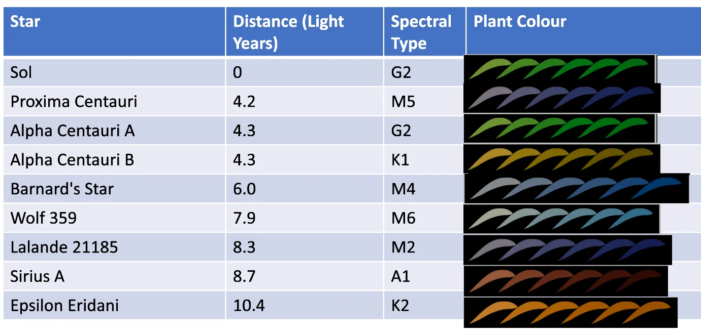

生命の最小単位における発生、すなわち**微生物発生**は、細胞膜の形成と自己複製系の確立に集約される。地球外環境において、水以外の溶媒（例えば液体メタンやアンモニア）を想定した場合でも、境界膜による「自己」と「外界」の分離は、エントロピー増大を阻むための絶対条件である。 微生物レベルの発生において、ハルシネーション（科学的根拠を欠く空想）を排して考察すれば、以下の二点が普遍的な制約となる。 1. **代謝ネットワークのトポロジー**：化学的勾配を利用したエネルギー代謝において、酵素（あるいはそれに準ずる触媒）の発生的獲得は、反応経路の閉鎖性を要求する。 2. **情報高分子の区画化**：核酸に類する情報分子が次世代に継承される際、単なる複製ではなく、膜の伸長と分裂を伴う「構造の発生」が必要となる。 低重力環境下の惑星においては、微生物のサイズ制約が地球よりも緩和される可能性がある一方で、ブラウン運動による物質拡散の効率がボトルネックとなり、微生物発生の形態学的な多様性は依然として細胞表面積と体積の比率（S/V比）に支配されると考えられる。
多細胞生物、特に移動能力を有する「動物型」の生命体を想定する場合、その**動物発生**プロセスは運動エネルギーの効率化という物理的要請を強く受ける。地球上の動物発生における基本原理である「軸形成（前後・背腹軸）」および「体節制」は、収斂進化の結果として、地球外生命においても高い確率で再現される可能性が高い。
地球の動物発生を司るホメオボックス（Hox）遺伝子群のような、空間的な位置情報を規定する「形態形成場」の概念は、三次元空間で複雑な体制を構築する上で不可欠である。地球外生命が炭素を骨格としない、あるいはDNAとは異なる遺伝暗号を有していたとしても、発生過程において細胞集団が位置情報を共有する「バイオ電気信号」や「化学濃度勾配」は、制御理論的に見て必須のモジュールといえる。
強重力下における動物発生では、骨格系（あるいは外骨格系）の形成が初期段階から優先され、神経系の発生は物理的な防護を前提として進む。逆に弱重力下では、浮力を利用した放射相称的な発生形態が卓越する可能性がある。しかし、捕食・被食関係という生態学的動圧が存在する限り、感覚器の頭部集中化（頭化）を伴う**動物発生**は、情報の処理速度と反応速度を最適化するための普遍的な解となる。
光合成あるいはそれに類する外部エネルギー吸収に特化した「植物型」生命体において、その**植物発生**は、受容面積の最大化と支持構造の維持という矛盾する二要素の最適化プロセスとなる。
地球上の植物は、頂端分生組織（SAM）による無限成長能を特徴とする。地球外における植物発生においても、移動を行わない生存戦略をとる場合、環境の不均一性（光の方向、栄養塩の分布）に適応するための「モジュール型成長」は極めて合理的である。

恒星のスペクトルが地球（G型主系列星）と異なる場合、例えば赤外線が支配的なM型赤色矮星の惑星では、**植物発生**における光受容体の感受域は大きく変化する。この場合、葉緑素（クロロフィル）に代わる、より長波長に適応した色素系が発生段階でプログラムされる必要がある。また、大気が希薄な惑星における植物発生では、クチクラ層の極端な発達や、放射線防護のためのケイ酸塩の蓄積など、細胞壁の発生学的な強化が観察されると推測される。
地球外生物の発生を規定する主要な物理定数について、以下の表にまとめる。 | 環境要因 | 微生物発生への影響 | 動物発生への影響 | 植物発生への影響 | | --- | --- | --- | --- | | **重力加速度 (g)** | 細胞内小器官の沈降速度 | 骨格・筋系の質量比率 | 導管内の水分輸送限界、最大樹高 | | **大気圧/密度** | 膜透過性と浸透圧調節 | 飛行能力の獲得閾値 | 蒸散効率とガス交換形態 | | **恒星放射スペクトル** | 活性酸素種に対する修復能 | 視覚器の発生学的検知帯 | 光合成色素の生合成経路 | | **磁場強度** | 荷電粒子による変異率制御 | 磁気受容による渡り行動の発生 | 細胞分裂の配向制御（推測） |
| 赤身魚（マグロ等） | 白身魚（スケトウダラ等） | 軟体動物（イカ等） | |
|---|---|---|---|
| ミオグロビン含有量 | 高い | 低い | 極めて低い |
| 結合組織（コラーゲン） | 中程度 | 低い | 高い |
| 熱安定性 | 比較的高い | 低い | 特異的（収縮しやすい） |
| 主な加工用途 | 刺身、缶詰 | 練り製品 | 乾燥品、燻製 |
本稿における考察は、あくまで熱力学第二法則、および液相を介した生化学反応という制約下に基づいている。一部のSFで描かれるような「プラズマ生命体」や「暗黒物質生命体」については、現在の分子生物学および発生学的知見を適用するには未だ物理学的な理論基盤が脆弱であり、本研究の射程外とする。 **微生物発生**、**動物発生**、**植物発生**のいずれにおいても、生命が「散逸構造」として持続するためには、情報の自己複製（Genotype）と形態の構築（Phenotype）の間に、フィードバック制御を伴う発生プロセスが介在しなければならない。この「情報の具現化」の論理こそが、宇宙における生命の普遍性と特殊性を分かつ境界線となる。
地球外生命の研究は、もはや「発見」を待つだけのフェーズから、理論的な「予測」を構築するフェーズへと移行しつつある。我々は地球の生命を唯一のサンプル（n=1）としながらも、そこに内包される発生学的原理を抽出し、パラメータを変動させることで、他天体における生命形態の可能性を絞り込むことができる。 今後は、人工細胞を用いた極限環境下での**微生物発生**のシミュレーションや、合成生物学的手法を用いた非標準アミノ酸による**動物発生**プロセスの再構成など、実験室内での検証が待たれる。地球外生物の発生を理解することは、翻って、我々自身の発生プロセスが宇宙の中でいかに「必然」であり、かつ「偶然」であったかを解明することに他ならない。
生命の起源を論じる際、地球の深海熱水噴出孔や地表の温泉地帯をモデルとした「RNAワールド」仮説が有力視されている。これを普遍生物学の枠組みに拡張すると、生命の誕生には「自由エネルギーの勾配」と「情報の濃縮を可能にする空間的区画化」の二点が必須条件となる。 1. **熱力学的散逸構造の形成**： エネルギー源が恒星光であれ、惑星内部の放射熱や潮汐加熱であれ、系が非平衡状態にあることが前提である。例えば、エウロパやエンケラドゥスのような氷衛星の内部海では、岩石コアとの相互作用による熱水活動が、還元的物質の供給源となり得る。ここでの**生命の起源と進化**は、金属硫化物表面での触媒反応から始まり、漸次的にアミノ酸やヌクレオチドの重合へと進む。 2. **情報分子の選択圧**： 未知の環境下において、遺伝情報を担う分子は必ずしもDNA/RNAである必要はない。しかし、情報の複製精度と変異による多様性創出のバランス（エラー・カタストロフ限界）は、いかなる化学系においても普遍的な数学的制約を受ける。地球外生物の発生を制御する「設計図」は、その惑星の化学的利用可能性（アベイラビリティ）に依存したポリマーによって記述されることになる。
地球上の進化史において、眼の形成や翼の獲得が独立して何度も繰り返された事実は、特定の形態が機能的に最適解であることを示唆している。この「収斂進化」の概念を宇宙規模に適用すれば、他天体においても類似の進化経路が辿られる可能性は高い。 * **エネルギー代謝の効率化**：酸化還元電位の差を利用した電子伝達系は、化学エネルギーを生物学的な通貨（ATP等）に変換する上で極めて汎用性が高い。 * **多細胞化への閾値**：酸素濃度の上昇（あるいはそれに準ずる強力な酸化剤の蓄積）は、コラーゲンのような高コストな構造タンパク質の合成を可能にし、それが複雑な**動物発生**を駆動するトリガーとなる。
理論的な発生学の予測を検証するためには、観測を通じた実証が不可欠である。**地球外生命の探査**において、我々は「我々の知る生命（Life as we know it）」のバイアスを排除しつつ、生命現象が環境に与える摂動を検出しなければならない。
次世代の宇宙望遠鏡や地上超大型望遠鏡による分光観測は、系外惑星の大気組成を詳細に明らかにしつつある。 | 観測対象成分 | 発生・代謝的意義 | 生命反応の示唆 | | --- | --- | --- | | **メタン () と酸素 ()** | 酸化還元ペアの共存 | 化学的非平衡状態による継続的供給の証拠 | | **クロロフィル類縁体** | 光子捕捉の吸収端 | **植物発生**的なエネルギー受容系の存在 | | **ホモキラリティ** | 分子構造の非対称性 | 酵素反応による特異的合成の痕跡 |
| 赤身魚（マグロ等） | 白身魚（スケトウダラ等） | 軟体動物（イカ等） | |
|---|---|---|---|
| ミオグロビン含有量 | 高い | 低い | 極めて低い |
| 結合組織（コラーゲン） | 中程度 | 低い | 高い |
| 熱安定性 | 比較的高い | 低い | 特異的（収縮しやすい） |
| 主な加工用途 | 刺身、缶詰 | 練り製品 | 乾燥品、燻製 |
火星の地下、あるいは氷衛星の噴流（プルーム）に対する直接探査は、バイオシグネチャー検出の精度を飛躍的に高める。細胞膜を構成する脂質（リピッド）の質量分析や、アミノ酸の対掌体比の測定は、地球外における**微生物発生**の有無を判断する直接的な指標となる。
生命の進化が高度な中枢神経系を生み出し、技術文明にまで達した場合、次なる課題は星間距離を超えたコミュニケーションである。**地球外文明への発信**（METI: Messaging to Extra-Terrestrial Intelligence）は、単なる物理学的な試みではなく、生物学的な知性の定義を問うプロセスである。
文明間通信に使用される言語や符号は、その生命体の感覚器の発生プロセスに強く規定される。 1. **感覚モダリティの相違**： 地球人類は視覚優位（電磁波受容）の種であるが、濃密な大気や水中、あるいは恒星光の届かない環境で進化した文明は、聴覚（振動受容）や化学感覚、あるいは磁気受容をベースとした情報体系を構築している可能性がある。 2. **数学という共通言語**： 物理定数や素数、水素の超微細遷移（21cm線）などは、環境に依存しない普遍的な定数である。しかし、それらを記述する「論理構造」自体が、生物学的脳のアーキテクチャ（ニューロンのネットワークトポロジー）に依存しているという議論も存在する。 **地球外文明への発信**におけるメッセージ設計では、我々の発生プロセスがもたらした「時間的・空間的認識のバイアス」をいかに脱構築できるかが鍵となる。
地球という揺りかごを離れ、他の惑星や宇宙空間での恒久的な居住を目指す**地球外移住**は、人類という種の発生プロセスを人為的に再編する試みでもある。
月や火星、あるいは宇宙居住施設での生活において、最大の懸念事項は生殖と個体発生への影響である。 * **胚発生への重力寄与**： 地球上の哺乳類の胚発生において、重力は細胞内の細胞質流動や、初期相転移における軸形成に寄与している可能性が高い。微小重力下での受精卵の分裂が、正常な形態形成（特に骨格系と前庭系）を辿るかどうかは、移住の成否を分ける臨界点となる。 * **放射線による遺伝的荷重**： 宇宙放射線によるDNA損傷は、配偶子および初期胚に対して深刻な変異圧をもたらす。これに対抗するためには、生物学的な修復能の強化（合成生物学的アプローチ）や、物理的な遮蔽技術の高度化が必須である。
移住先での持続可能な生存には、高度に制御された人工生態系（Closed Ecology Life Support System）が不可欠である。ここでの**植物発生**は、単なる食料生産手段ではなく、酸素供給と二酸化炭素固定、さらには心理的安定をもたらす環境調整因子として機能する。 地球とは異なる重力、大気圧、光源（LED等）の下での植物の「屈性」や「分生組織の活動」を完全に制御する技術は、テラフォーミングの第一歩となる。
本稿で検討してきた**微生物発生**から、高度な知性による**地球外文明への発信**、そして人類の**地球外移住**に至る一連の流れは、生命が「物質」から「情報」へと進化し、自らの発生プロセスを宇宙空間へと拡張していく過程として捉えることができる。 **生命の起源と進化**は、決して地球という特異点に閉じた現象ではない。物理法則が全宇宙で普遍であるならば、生命という散逸構造が自己組織化し、複雑な発生プロセスを経て知性を獲得する論理もまた、普遍的な帰結であるはずだ。 我々が行う**地球外生命の探査**は、鏡に映った自分自身の根源を探る行為に他ならない。他天体における「発生の論理」を見出すことは、我々の細胞一つひとつに刻まれた40億年の歴史を、宇宙的な文脈で読み解くことである。異星発生学（Xeno-Embryology）の確立は、生命が地球という重力の束縛を逃れ、宇宙という広大なキャンバスに新たな「形態」を描き出すための理論的基盤となるであろう。
* 非炭素ベースの生化学系における形態形成シミュレーション。 * 深宇宙放射線環境下での哺乳類胚の長期培養実験とエピジェネティックな解析。 * 高次知性文明との通信における、非視覚的情報の記号化プロトコルの策定。 これらの課題への挑戦こそが、21世紀の生物学が果たすべき最大の責務である。